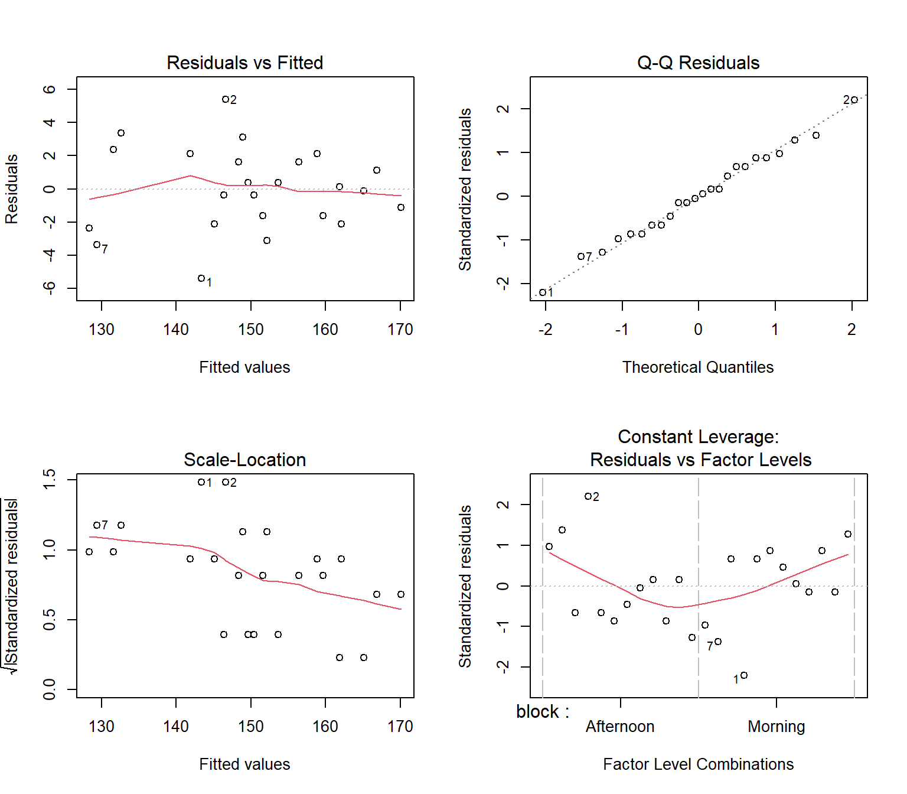

Using an Analysis of Variance (ANOVA) and linear contrasts in R to determine the optimal combination of cup material, lids, and stirring for heat dispersal.
DOE
R
BIBD
Author
Ying Hui Tan
Published
June 1, 2026
Overview: The Core Objective
While it seems like common sense on which factors affect coffee cooling in general, I guess the main point of this blog is to understand the key concepts of Design of Experiment (DoE). Elements like linear contrast and factorial design could be applied to real world data in manufacturing plants or product analytics.
The Problem: What Cools Coffee Fastest?
Ever wondered what is the optimal way to cool down hot coffee? In this project, we experiment with different methods of cooling a cup of coffee by varying three factors: the material of the cup, stirring, and the addition of a lid. The goal is to determine the most effective combination for cooling coffee under controlled environmental conditions.
The primary response variable is the temperature of the coffee after a fixed time interval (10 minutes).
Experimental Setup & Controls
To ensure consistency and isolate the true treatment effects, several critical engineering controls were implemented: * Fixed Environment: All trials were conducted in a single room with the thermostat locked at 80°F. * Standardized Initial State: Water was heated in the same vessel to a full boil, poured immediately, and standardized to an initial temperature of 180°F. * Standardized Stirring: The stirring protocol was strictly controlled at 1 rotation per second for exactly 1 minute. * System Cleanliness: Cups were thoroughly washed and allowed to rest for 15 minutes before reuse to return to room temperature.
Factors of Interest (3x2x2 Factorial Design)
We evaluated 12 distinct treatment combinations with 2 replications per treatment, resulting in a total of 24 experimental units (individual cups of coffee).
Cup Material (3 Levels): Ceramic, Paper, Insulated Metal
Lid (2 Levels): Lid (+) vs. No Lid (-)
Stirring (2 Levels): Stir (+) vs. No Stir (-)
In addition to the factorial design, there is a blocking effect (Morning vs Afternoon), in consideration of the time frame the experiement is conducted. Hence, this is a 3x2x2 Full Factorial Design arranged in Randomised Complete Block Design (RCBD).
The statistical linear model for this 3x2x2 randomized blocked factorial design is expressed as:
Definition of Terms: * \(Y_{ijkl}\): The observed final coffee temperature for the \(i\)-th block, \(j\)-th cup material, \(k\)-th lid status, and \(l\)-th stirring status.
\(\mu\): The overall grand mean of the coffee temperature.\(\gamma_i\): The effect of the \(i\)-th Block (Morning vs. Afternoon), where \(i = 1, 2\).
\(\alpha_j\): The main effect of the \(j\)-th factor, Cup Material (Ceramic, Paper, Insulated Metal), where \(j = 1, 2, 3\).
\(\beta_k\): The main effect of the \(k\)-th factor, Lid (Yes vs. No), where \(k = 1, 2\).
\(\delta_l\): The main effect of the \(l\)-th factor, Stirring (Yes vs. No), where \(l = 1, 2\).
\((\alpha\beta)_{jk}\): The 2-way interaction effect between Cup Material and Lid. (Significant in your data!)
\((\alpha\delta)_{jl}\): The 2-way interaction effect between Cup Material and Stirring.
\((\beta\delta)_{kl}\): The 2-way interaction effect between Lid and Stirring.
\((\alpha\beta\delta)_{jkl}\): The 3-way interaction effect between Cup Material, Lid, and Stirring.
\(\epsilon_{ijkl}\): The random experimental error term, assumed to be independent and identically distributed (i.i.d.) following a normal distribution: \(\epsilon_{ijkl} \sim N(0, \sigma^2)\).
Data Loading & The Raw Numbers
To analyze this properly, I loaded the 24 experimental runs into R. I also accounted for a Blocking Factor (Morning vs. Afternoon runs) just in case the ambient temperature outside leaked into the room and messed with our data.
Here is what the raw dataset looks like:
# Creating our 3x2x2 factorial datasetcoffee_df <-data.frame(treatment =rep(paste0("T", 1:12), each =2),material =rep(c("ceramic","ceramic","ceramic","ceramic","paper","paper","paper","paper","metal","metal","metal","metal"), each =2),lid =rep(c("yes","yes","no","no","no","no","yes","yes","yes","yes","no","no"), each =2),stir =rep(c("yes","no","no","yes","no","yes","no","yes","yes","no","no","yes"), each =2),block =rep(c("Morning", "Afternoon"), times =12),temp =c(138,152,150,150,126,134,126,136,146,150,144,143,150,154,152,149,162,165,168,169,158,158,161,160 ))# Converting characters to factors for ANOVAcoffee_df$material <-factor(coffee_df$material)coffee_df$lid <-factor(coffee_df$lid)coffee_df$stir <-factor(coffee_df$stir)coffee_df$block <-factor(coffee_df$block)head(coffee_df)
treatment material lid stir block temp
1 T1 ceramic yes yes Morning 138
2 T1 ceramic yes yes Afternoon 152
3 T2 ceramic yes no Morning 150
4 T2 ceramic yes no Afternoon 150
5 T3 ceramic no no Morning 126
6 T3 ceramic no no Afternoon 134
Checking for Assumptions
Before celebrating the results, we have to make sure the linear regression model isn’t lying to us. I ran standard diagnostics to check for normality, independence, and homoscedasticity.
model_lm <-lm(temp ~ block + material * lid * stir, data = coffee_df)par(mfrow =c(2, 2))plot(model_lm)

Looking at the plots, everything tracks cleanly along the diagonal lines and the residuals don’t funnel out, meaning our statistical assumptions hold up fine.
My Interpretation of the Data: - The Obvious Winners: material and lid have a \(p\)-value way below \(0.001\). No surprise there. - The Interaction (material:lid): This is significant (\(p = 0.0163\)). It mathematically proves that a lid’s effectiveness shifts drastically depending on the cup shape and material. - The Stirring Myth: Interestingly, stir was not significant (\(p = 0.1848\)). For a short 10-minute window, the literal fluid motion of stirring barely impacted heat loss compared to the insulation properties of the cup.
Taking a Closer Look with Linear Contrasts
I wanted to compare physical properties only. ANOVA only tells me if at least one group mean differs but does not show where those difference exist. Hence, linear contrast in this case help to identify which factors are more significant when grouped in a certain way, like takeout cups vs reusable mugs etc.
library(emmeans)
Warning: package 'emmeans' was built under R version 4.4.3
material_emms <-emmeans(model_anova, "material")# Contrast 1: Insulated Metal vs. Non-Insulated (Ceramic & Paper)# Contrast 2: Takeout Paper vs. Permanent Reusable Mugscontrast(material_emms, list("Insulated Metal vs. Others"=c(-0.5, 1, -0.5)))
contrast estimate SE df t.ratio p.value
Insulated Metal vs. Others 18.9 1.56 11 12.084 <0.0001
Results are averaged over the levels of: block, lid, stir
contrast(material_emms, list("Disposable Paper vs. Reusable"=c(-0.5, -0.5, 1)))
contrast estimate SE df t.ratio p.value
Disposable Paper vs. Reusable -2.31 1.56 11 -1.481 0.1668
Results are averaged over the levels of: block, lid, stir
The contrast shows that the insulated metal cup holds heat significantly better (by about 18.9°F) than everything else. However, the paper takeout cup and the reusable ceramic mug actually performed comparably over this 10-minute stretch (\(p = 0.1668\)).
Interaction Plot
Honestly, at times interaction plot do show some insights, but in this experiment, it does not really show much sadly, things stayed relatively parallel and predictable.
While it would have been cool to see a massive 3-way interaction impact, discovering that factors like stirring operate independently of the cup material is a huge insight in itself. It proves the system is robust and predictable.
So, we know from our main ANOVA table that material is heavily significant. But remember: ANOVA is a bit of a tease. It tells us, “Hey, at least one of these cup materials performs differently than the others!” But it doesn’t actually tell us which pairs are different.
Are ceramic and paper different? Are paper and metal different?
To find out, we could technically just run a bunch of individual \(t\)-tests comparing every single combination. But there is a massive trap called Family Wise Error Rate [FWER] (The Multiplicity Problem). Every time you run a statistical test, you have a 5% chance of claiming a false positive by pure luck. If you run dozens of tests, those 5% chances stack up fast, and your overall error rate skyrockets.
That is where Tukey’s Honest Significant Difference (TukeyHSD) steps in. It is “honest” because it adjusts our \(p\)-values backward, keeping our global error rate strictly at 5%, no matter how many pairs we compare.
Let’s look at what happens when we run the full pairwise comparison across our cup materials:
The experiment confirms that Cup Material and the use of a Lid are the most critical factors in maintaining coffee temperature (\(p < 0.001\)). The Ceramic cup was the superior performer for heat dispersal, losing significantly more heat than both the paper and metal alternatives. Post-hoc Tukey testing confirmed that all three materials are statistically distinct from one another, establishing a clear performance hierarchy: Ceramic > Paper > Metal.
The Interaction Effect (Material:Lid)
A key finding of this study is the significant interaction between Material and Lid (\(p = 0.0163\)). While the addition of a lid caused a deterioration of the heat dispersal effects across all groups, its impact was most dramatic for the Ceramic cup. This is likely due to the ceramic cup’s larger surface area relative to the paper and metal containers; the lid acts as a critical barrier against evaporation and convective heat loss that would otherwise be maximized in an open-top ceramic vessel.
Insights from Linear Contrasts
Insulated vs. Non-Insulated: The contrast comparing the insulated metal cup against the average of the others was highly significant (\(p < 0.0001\)), with an estimate of 18.9°F. This underscores that specialized vacuum or double-wall insulation is far more effective in heat retention than standard material density.
The contrast between the paper (disposable) cup and the average of the reusable cups (ceramic and metal) was not significant (\(p = 0.1668\)). This suggests that a standard paper takeout cup performs comparably to the average of “permanent” household mugs in short-duration (10-minute) heat dispersion.
Non-Significant Factors and Environmental Control
The Stirring factor and its associated interactions were not significant (\(p = 0.1848\)). This indicates that the internal movement of the liquid has a negligible effect on cooling compared to the external insulation and surface-level heat loss. Finally, the significance of the Blocking factor (\(p = 0.0495\)) justifies the experimental design choice to account for time-of-day variations, ensuring that environmental shifts between morning and afternoon did not bias the treatment effects.
Final Recommendation: To achieve the optimal (fastest) cooling, the experiment suggests using a Ceramic cup without a lid. While the ‘Stirring’ factor did not reach statistical significance (\(p = 0.18\)), the Material:Lid interaction (\(p = 0.016\)) proves that the cooling effect of removing the lid is most potent when using a wide-mouthed ceramic vessel. Conversely, if the goal is to prevent cooling, an insulated metal cup with a lid should be used.